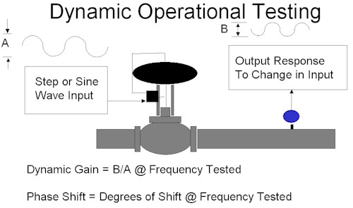
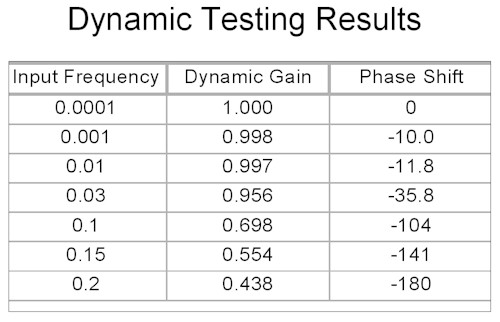
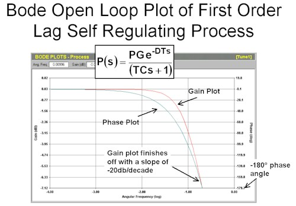
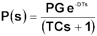
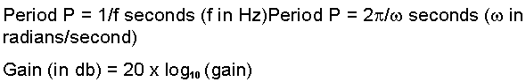

|
Loop Problem Signatures Part 2
6. Basics of frequency plots – part 1
The
rest of this series of Loop Signature articles are going to be devoted
to the dynamics of virtually every single type of process that you may
encounter in industrial control analysis. The purpose of this is
to allow you to identify the dynamics of any process and then to apply
the most appropriate type of tuning for that particular process. I
cannot over-emphasise how valuable this information can be to you. Many
people who have attended our Part 2 courses have contacted me later,
and proudly told me how they have managed to tune certain difficult
processes in their plant, which had previously always been in manual,
or else working extremely badly in automatic.
To
be able to understand this section of these articles, a very basic
understanding of frequency plots is very useful. Most people who
have studied control will have encountered frequency plot theory at
some stage in their studies. However my experience has shown that
very few people really understood very much what it was about, and even
fewer have ever used the theory in real life. This is probably
because it is impossible to generate frequency plots without the right
loop analytical tools, for example the Protuner Loop Analysis software.
It
will be remembered that the basics of tuning theory was covered in Loop
Signature No. 23, which is on my "Basic Trouble Shooting and Loop
Tuning" CD. I am going to repeat that section here:
Following
the original ideas postulated by the early mathematicians who developed
the theory, e.g. Nichols, one should perform a full frequency response
test on a control loop. As illustrated in Figure 1, a sine wave
is generated onto the input to the process (process demand).

Figure 1
Initially
the sine wave must be at a very low frequency. A sine wave of the
same frequency will appear at the output of the loop (process
variable). The amplitudes of the input and output sine waves are
measured and their ratio calculated. This is called the dynamic
gain. The phase difference is also measured. The test would
then be repeated at a slightly higher frequency. This procedure is
then repeated with higher and higher frequencies until the output lags
the input by a phase difference of -180°. At this point if the
control loop was closed, the contribution fed back to the process from
the feedback would start pushing the valve in the wrong direction, and
instability would result. The table shown in Figure 2 is an
example of such a test.

Figure 2
The
next step in the tuning procedure is to draw a frequency plot from the
test data. The various mathematicians all came up with slightly
different plots. A Bode open loop plot is shown in Figure 3, which
consists of two graphs, firstly dynamic gain versus frequency, and
secondly phase lag versus frequency.

Figure 3
To obtain optimum tuning one manipulates the shape of the plots. This will be discussed later.
Unfortunately
this methodology for tuning cannot be used in real life, as it would
take far too long, especially on processes with very slow dynamics,
like temperature loops, and also as you would be not be allowed to
place many critical loops in oscillation in a real plant. I would
however like to assure you that this theory is not some mathematical
"claptrap", but in fact is extremely accurate. If you could do the
tests as discussed, and if no loop problems existed, you would be able
to come up with really good tuning. Therefore please bear in mind
that tools that can in fact generate accuracy frequency plots are in
reality extremely valuable and useful.
The
first process type we are going to examine will be the simple one which
we have already discussed quite a bit in this series, viz. the first
order lag, deadtime, self regulating process, which are the type that
many of our more simple processes in industrial plants more or less
conform to.

We
are now going to examine the Bode open loop plot of this process, which
is the one shown in Figure 3 in more detail. (Incidentally, I am
really only going to explain Bode plots in this series.)
As
mentioned above, the Bode consists of two graphs, firstly dynamic gain
versus angular frequency (in radians/second), and secondly phase lag
versus angular frequency. Dynamic gain is in decibels where:
Gain (in db) = 20 x log10 ("absolute" gain)
(I am calling the ratio of the two gains which are measured in percent of measurement range "absolute gain".)
The phase lag is in degrees, and the horizontal frequency axis is a logarithmic scale.
For
this particular dynamics, working from lower frequencies on the left
hand side to higher frequencies on the right hand side, the gain plot
starts off horizontally and then starts dropping "off" and finishes up
with a slope of –20 db/decade at the point where the phase plot reaches
–180°. Purely as a matter of interest the slope would be –40
db/decade if there had been two lags, and –60 db/decade for three lags,
and so on.
Notice too, that like all self-regulating processes, the phase plot also starts off horizontally at 0° and ends at
-180°.
Certain information can be obtained from the open loop gain plot:
Firstly
the value of the gain where the plot intersects the vertical dynamic
gain axis is actually the process gain , (which was obtained by making
a step change on the controller PD, and which was also discussed in
great detail in the Part1 Loop signature series). This is fairly
logical because if the frequency is slow enough the dynamic gain must
be the same as the process gain.
Next
the frequency where the phase lag reaches –180° is known as the
crossover frequency. This is also known as the ultimate frequency,
which will be discussed later.
The
next piece of interesting information can be obtained by moving down by
–3 db from the intersection of the gain plot with the gain axis, and
then drawing a horizontal line rightwards to intersect the gain plot it
will do so at a frequency called the corner frequency, corner. The
interesting thing about this is that we can then get the value of the
lag time constant from this using the following formula:
The last piece of information we can easily get from this plot is the ultimate gain, which we will also come back to.
In
the meantime here are a couple of useful formulae, which you may have
forgotten, but are very useful when working with frequency plots:

(To be continued in the next Loop Signature article)
Index to articles
Michael
Brown is a specialist in control loop optimisation, with many years of
experience in process control instrumentation. His main activities are
consulting, and teaching practical control loop analysis and
optimisation. He gives training courses which can be held in clients'
plants, where students can have the added benefit of practising on live
loops. His work takes him to plants all over South Africa, and also to
other countries. He can be contacted at:
Tel (011) 486-0567
Fax (011) 646-2385
E-Mail: michael.brown@pixie.co.za
|